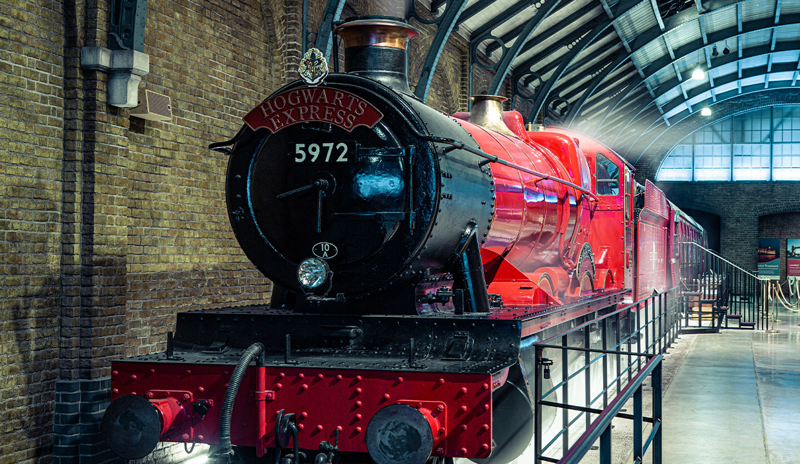

2023年六月，東京將新開幕的哈利波特片場！
九又四分之三月台

九又四分之三月台位於倫敦國王十字車站，遠離麻瓜，是哈利第一次進入魔法世界的經歷之一。在拍攝過程中，許多場景都是在倫敦市中心繁忙的火車站外景拍攝的。然而，平台的一部分是為《死神的聖物(下)》在現場創建的，火車內的任何場景都是在一個特殊的內部車廂內拍攝的。粉絲們受邀踏上九又四分之三月台、登上霍格華茲特快車，車廂配有綠幕，透過綠幕技術，粉絲們得以踏上前往魔法學校的旅程。
斜角巷

繁華的商業街斜角巷是準備返回霍格華茲的年輕男女巫師的必經之地。從在古靈閣巫師銀行領取他們的加隆到在奇獸動物園選擇他們心愛的動物夥伴，這條街擁有霍格華茲學生需要的一切。在拍攝期間，隨著牆壁的移動、店面的移動和新商店的增加，佈景不斷變化。該佈景還被重新鋪設了一層電影用人造雪，成為《阿茲卡班的逃犯》中的活米村。踏上斜角巷，您會發現每個商店櫥窗的細節，包括奧利凡德魔杖店和衛氏巫師法寶店。